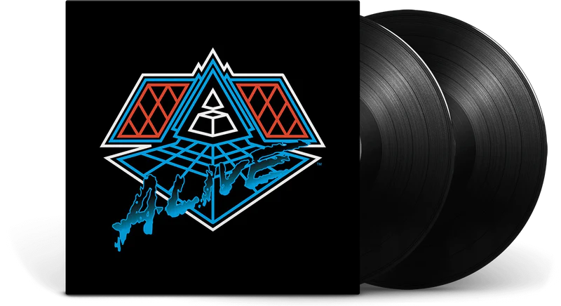
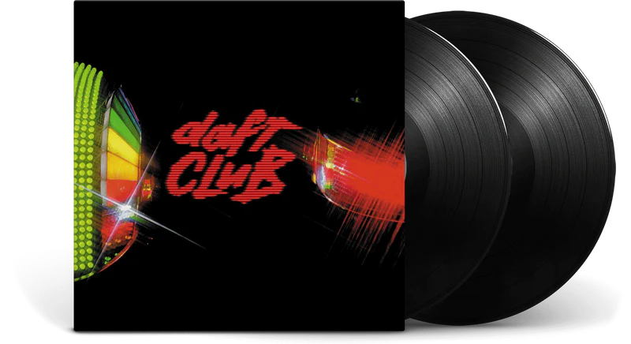

Discografía



Daft Punk fue un dúo francés de música
electrónica formado en 1993 en Parías por
Thomas Bangalter y Guy-Manuel de Homem-
Christo. Alcanzaron popularidad a fines de la
década de 1990 como parte del movimiento
house francés, combinando elementos de la
música house con funk, disco, rock y pop.
Obtuvieron elogios y éxito comercial y son
considerados como uno de los actos más
influyentes en la música dance.
Octubre 20 New York, Madison Square Garden.
Noviembre 23 Berlín, Germany Velodrom.
Junio 29 Dusseldorf, Germany Philipshalle.